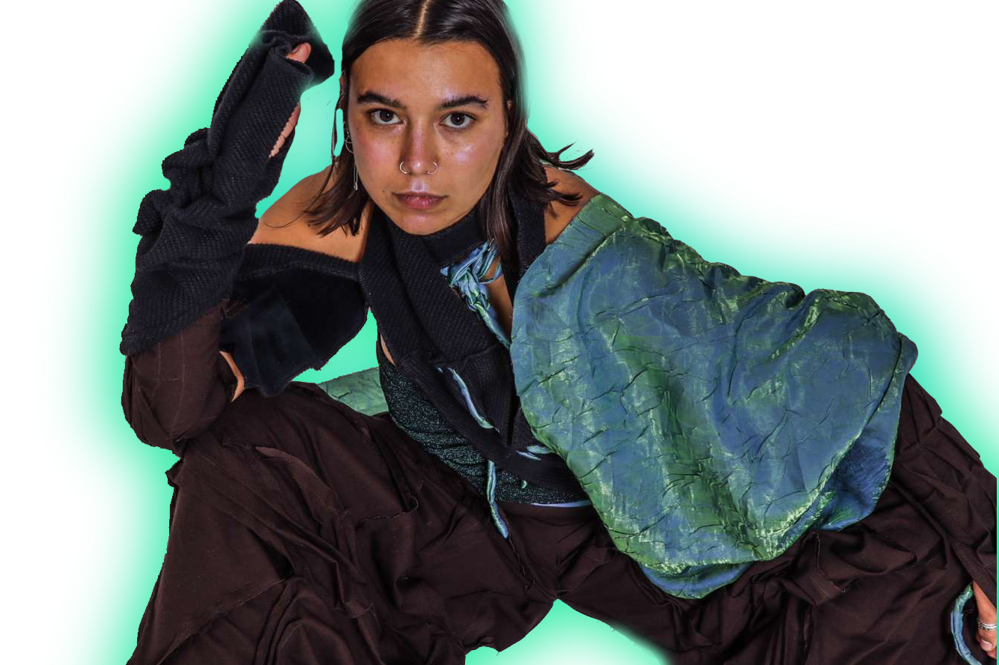
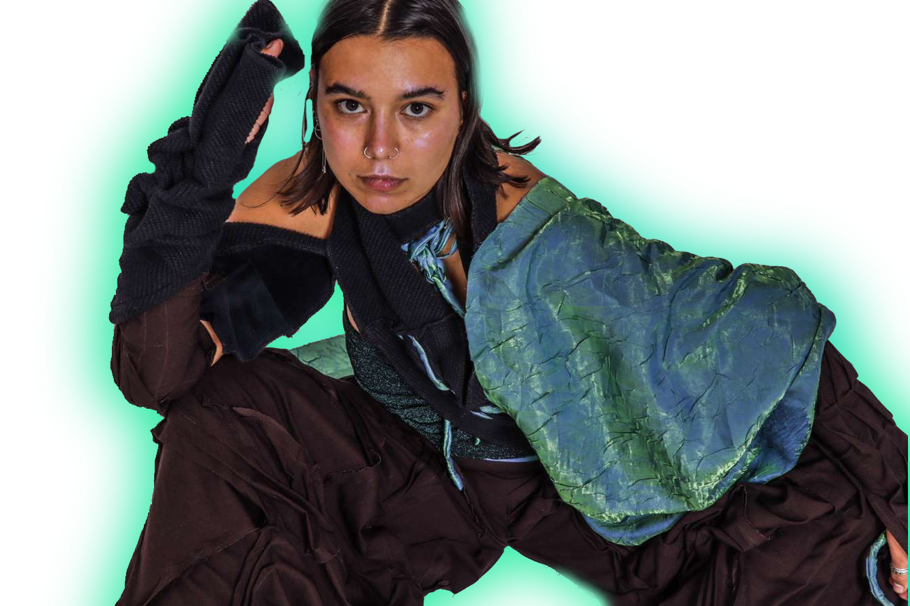
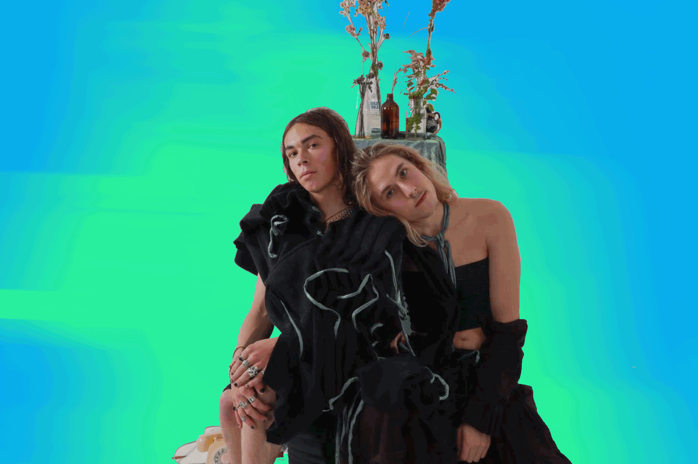
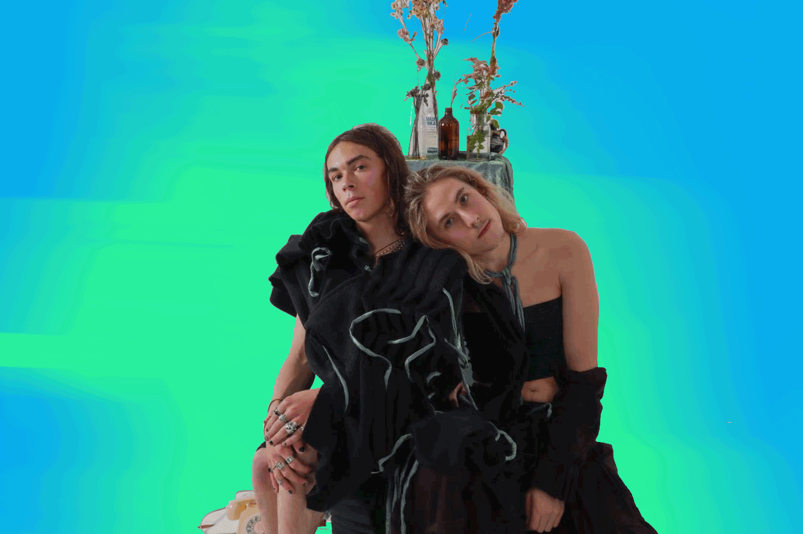

Sofia Heke
“How can fashion represent the fluidity of masculine and feminine energy?”
As a Māori designer I discovered that since pre colonisation, gender and sexual fluidity has always been in Aotearoa. Takatapui is an ancient Māori term meaning “intimate companion of the same sex” and today is used the same way queer is used. Evidence of sexual fluidity are seen in historical chants and carvings.
Using 100% recycled fabric,
I wanted showcase this fluidity of the masculine and feminine
thats always been in Māori culture - and how sensuality can be
expressed through all identities without being linked to sexuality.
As I chose to express this concept through fashion design,
I researched textile techniques and manipulations such as gathering, smocking, tucking, sculpture, and drapery.
I wanted a technique that provided fluidity and sensuality
in my collection. I discovered that the tucking technique allowed
fluidity and sculptural movement with fabric, so I manipulated and
implemented this technique into my five-piece collection.

 

 
